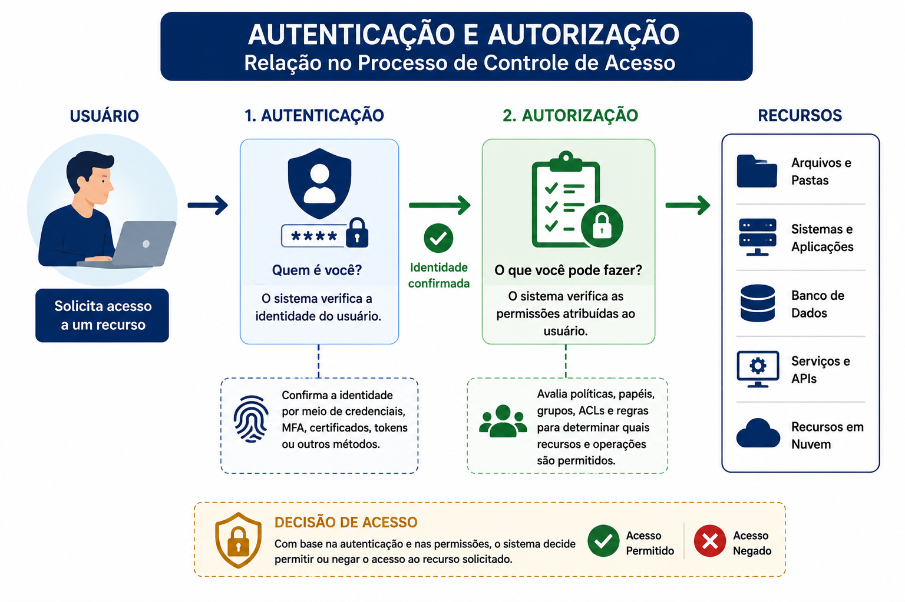
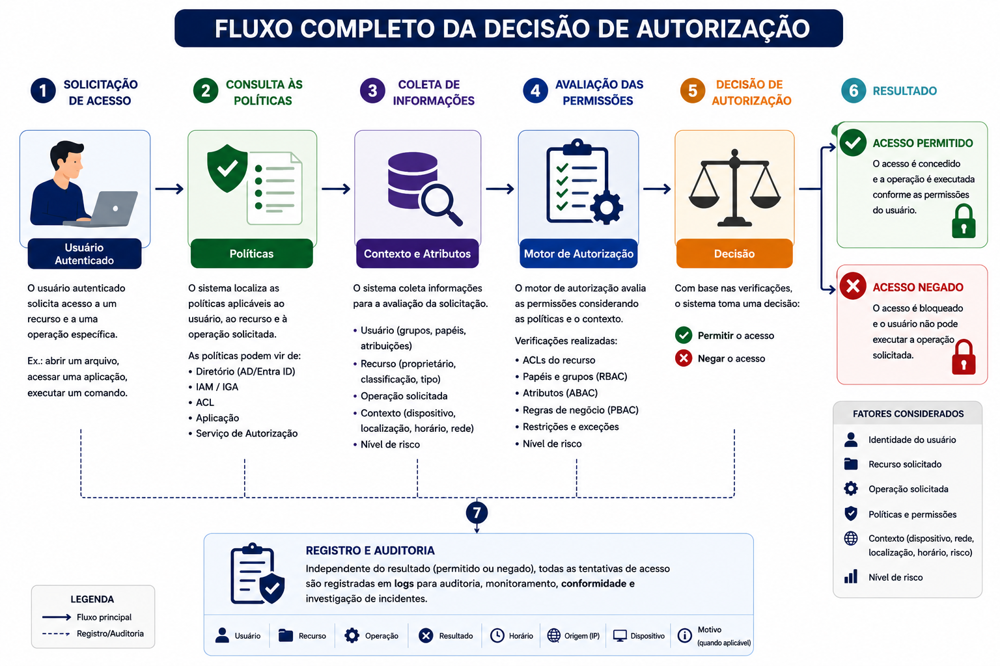
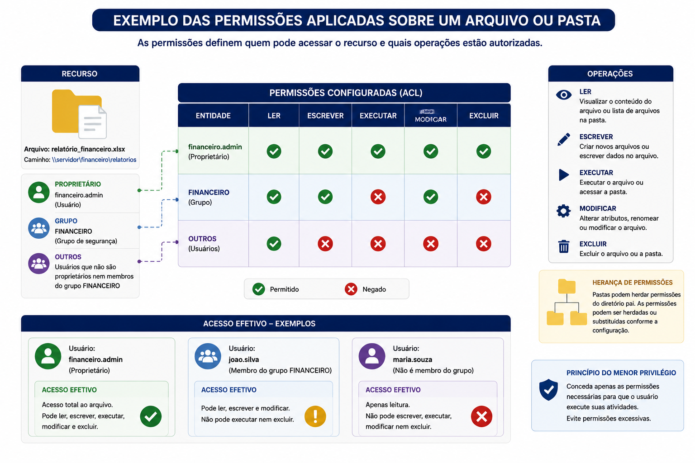
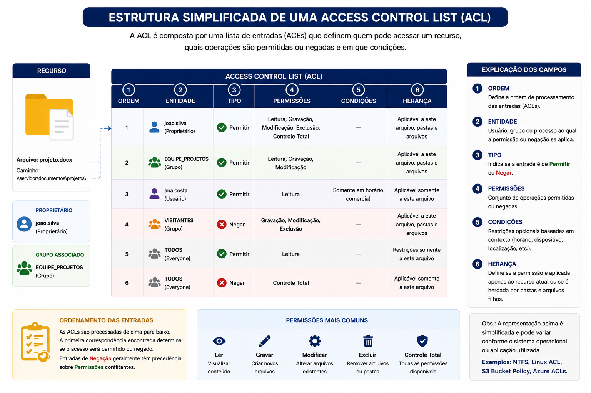
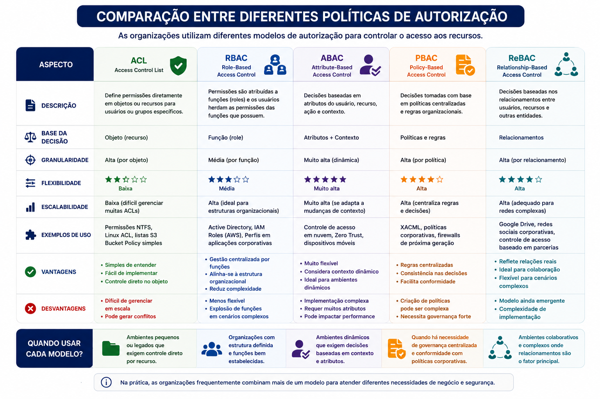
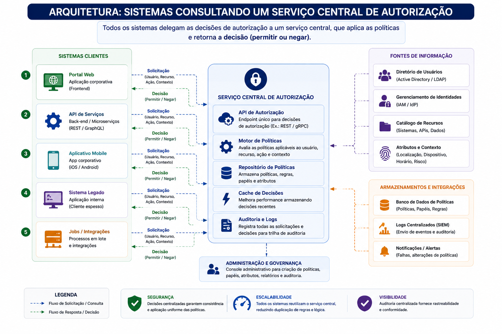
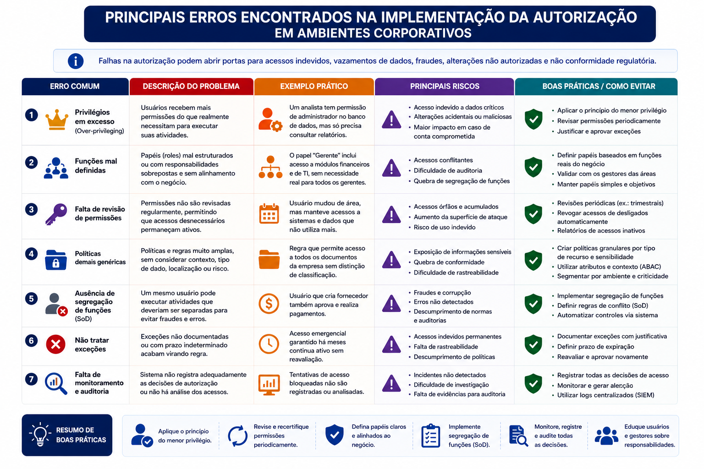
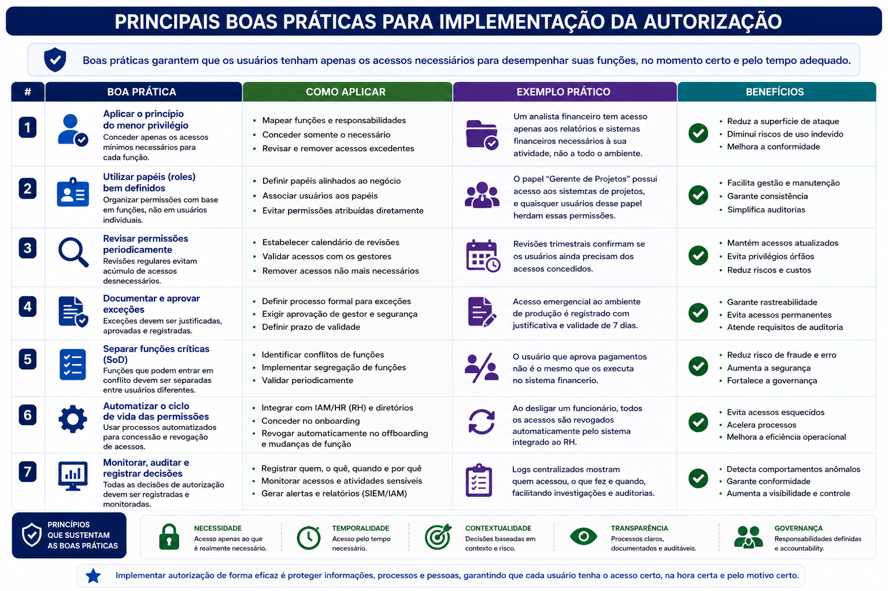
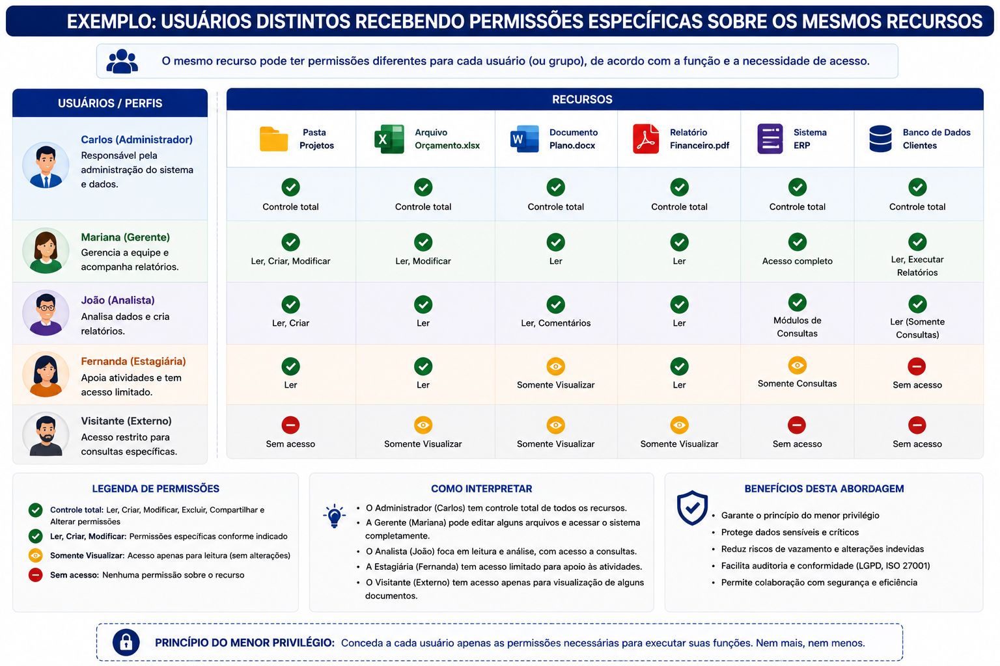

📋 Guia Rápido
Cybersecurity
Fundamentos da Segurança da Informação
✔ Autorização
Iniciante / Intermediário
Permissões
Privilégios
RBAC
ABAC
ACL
Policies
Least Privilege
IAM
35 minutos
📖 Resumo Executivo
Imagine que um colaborador realizou login com sucesso no sistema corporativo utilizando senha e autenticação multifator. Isso significa que ele pode acessar qualquer informação da empresa?
A resposta é não.
Após confirmar a identidade do usuário por meio da Autenticação, o sistema precisa responder outra pergunta igualmente importante:
O que esse usuário está autorizado a fazer?
É exatamente essa decisão que pertence ao processo de Autorização. Ela determina quais recursos poderão ser acessados, quais operações poderão ser executadas e quais ações serão bloqueadas de acordo com as políticas definidas pela organização.
Em um ambiente corporativo, diferentes usuários possuem funções distintas. Um analista financeiro necessita acessar sistemas contábeis, enquanto um profissional de Recursos Humanos deve consultar informações de colaboradores. Já um administrador de infraestrutura poderá gerenciar servidores e equipamentos de rede, atividades que não devem estar disponíveis aos demais usuários.
Por esse motivo, a Autorização representa um dos pilares da Segurança da Informação, reduzindo riscos de vazamento de dados, fraudes, alterações indevidas e abuso de privilégios.
Autorização é o processo responsável por determinar quais recursos um usuário autenticado poderá acessar e quais operações ele poderá executar.
Neste capítulo estudaremos como essas decisões são tomadas, conheceremos os diferentes modelos de autorização utilizados nas organizações e veremos como tecnologias modernas implementam controles granulares para proteger informações corporativas.
Compreender como funcionam os mecanismos de Autorização, entender a diferença entre autenticar e autorizar, conhecer os principais modelos utilizados em ambientes corporativos e identificar boas práticas para concessão segura de permissões e privilégios.
✔ O que é Autorização?
Autorização é o processo que ocorre após a autenticação e tem como finalidade decidir quais recursos estarão disponíveis para um usuário autenticado.
Enquanto a Autenticação confirma a identidade do usuário, a Autorização verifica quais permissões foram atribuídas a essa identidade e quais operações poderão ser realizadas.
Na prática, cada solicitação de acesso pode resultar em uma decisão diferente. Um mesmo usuário pode possuir permissão para consultar um documento, mas não para alterá-lo. Da mesma forma, um administrador pode gerenciar servidores sem necessariamente ter acesso aos sistemas financeiros da organização.

A Autorização responde à pergunta:
"O que você pode fazer?"
Já a Autenticação responde:
"Quem é você?"
Ambos os processos são complementares e indispensáveis para a
implementação de um Controle de Acesso seguro.
🔄 Autenticação × Autorização
Embora ocorram em sequência durante um processo de acesso, Autenticação e Autorização possuem objetivos completamente diferentes.
Confirma a identidade do usuário.
Exemplos:
• Senha
• Biometria
• Certificado Digital
• MFA
Determina os recursos disponíveis para o usuário.
Exemplos:
• Ler arquivos
• Alterar registros
• Excluir documentos
• Administrar sistemas
Em outras palavras, autenticar significa provar quem você é. Autorizar significa definir o que você poderá fazer após sua identidade ser confirmada.
⚙ Como Funciona uma Decisão de Autorização
Sempre que um usuário tenta acessar um recurso, o sistema precisa decidir se aquela operação será permitida ou bloqueada.
Essa decisão não ocorre de forma aleatória. Ela segue uma sequência de verificações baseada nas políticas de segurança da organização, nas permissões atribuídas ao usuário e no contexto da solicitação.
Em grandes ambientes corporativos, esse processo acontece em milissegundos e pode envolver diretórios de identidade, bancos de dados, serviços IAM, aplicações e mecanismos de auditoria.

📥 Etapa 1 – Solicitação de Acesso
Todo processo de autorização inicia quando um usuário autenticado solicita acesso a um recurso específico.
Esse recurso pode ser um arquivo, uma pasta, um banco de dados, uma aplicação, uma API, um servidor ou qualquer outro ativo protegido.
📄 Abrir um documento.
🗄 Consultar um banco de dados.
🌐 Acessar uma aplicação Web.
🖥 Conectar em um servidor.
☁ Utilizar um serviço em nuvem.
• Usuário autenticado.
• Recurso solicitado.
• Operação desejada.
• Horário.
• Origem da conexão.
📋 Etapa 2 – Consulta às Políticas
Após receber a solicitação, o sistema consulta as políticas de autorização previamente definidas pela organização.
Essas políticas estabelecem quais usuários ou grupos podem acessar cada recurso e quais operações são permitidas em cada situação.
Dependendo da arquitetura utilizada, essas regras podem estar armazenadas em um Active Directory, Microsoft Entra ID, serviço IAM, banco de dados ou diretamente na aplicação.
• Analistas Financeiros podem consultar relatórios financeiros.
• Apenas Gerentes Financeiros podem aprovar pagamentos.
• Usuários externos não possuem acesso ao ERP.
🔍 Etapa 3 – Avaliação das Permissões
Com as políticas carregadas, o mecanismo de autorização compara as permissões do usuário com o recurso solicitado.
Essa análise pode considerar diversos fatores, como grupos, papéis (roles), atributos, localização geográfica, dispositivo utilizado, horário do acesso e classificação da informação.
✔ Papel do usuário.
✔ Departamento.
✔ Grupos de segurança.
✔ Classificação do recurso.
✔ Localização.
✔ Dispositivo.
✔ Horário.
✔ Nível de risco.
• RBAC.
• ABAC.
• ACL.
• Policies.
• Zero Trust.
✔ Etapa 4 – Decisão da Autorização
Após avaliar todas as regras, o sistema toma uma decisão.
Caso todas as condições sejam atendidas, o acesso é concedido. Caso contrário, a solicitação é bloqueada e o usuário recebe uma mensagem informando que não possui autorização suficiente.
O usuário possui todas as permissões necessárias para executar a operação solicitada.
O usuário não possui privilégios suficientes ou alguma política de segurança impede a operação.
Na maioria dos ambientes corporativos modernos, prevalece o princípio do Default Deny. Todo acesso é negadopor padrão até que exista uma regra explícita permitindo sua execução.
📝 Etapa 5 – Registro em Auditoria
Independentemente do resultado da autorização, a tentativa de acesso normalmente é registrada em logs de auditoria.
Esses registros permitem rastrear quem tentou acessar determinado recurso, quando a tentativa ocorreu, qual operação foi realizada e qual foi a decisão tomada pelo sistema.
👤 Usuário.
🕒 Data e horário.
🌍 Origem da conexão.
📄 Recurso solicitado.
⚙ Operação executada.
✔ Resultado da autorização.
• Auditoria.
• Investigação Forense.
• Conformidade.
• Detecção de incidentes.
• Rastreabilidade.
A decisão de autorização não representa o fim do processo de segurança. Em arquiteturas modernas baseadas em Zero Trust, cada nova solicitação pode ser reavaliada continuamente considerando mudanças de contexto, risco, dispositivo utilizado e comportamento do usuário, permitindo que acessos anteriormente autorizados sejam revogados caso sejam identificados indícios de comprometimento.
🔐 Permissões e Privilégios
Após decidir que um usuário pode acessar determinado recurso, o sistema ainda precisa definir exatamente quais operações estarão disponíveis para esse usuário.
Essas operações são conhecidas como permissões. Cada permissão representa uma ação específica que poderá ser executada sobre um recurso, como visualizar um arquivo, alterá-lo, excluí-lo ou executá-lo.
Já os privilégios representam capacidades mais amplas, normalmente associadas à administração de sistemas, configuração de serviços e gerenciamento de outros usuários.
Embora os dois conceitos estejam relacionados, eles possuem objetivos diferentes e são utilizados em níveis distintos da infraestrutura.

📄 Permissões
As permissões determinam exatamente quais operações poderão ser executadas sobre um recurso específico.
Dependendo do sistema operacional ou da aplicação, o conjunto de permissões pode variar, porém algumas operações são praticamente universais.
Permite visualizar informações sem realizar alterações.
Exemplos:
• Abrir documentos.
• Consultar registros.
• Visualizar relatórios.
Permite criar ou gravar novas informações.
Exemplos:
• Criar arquivos.
• Inserir registros.
• Salvar alterações.
Permite alterar conteúdos existentes.
Exemplos:
• Editar documentos.
• Atualizar registros.
• Renomear arquivos.
⚙ Permissões Avançadas
Além das permissões básicas, diversos sistemas oferecem controles mais específicos para operações administrativas.
Permite executar programas, scripts ou comandos.
Permite remover arquivos, diretórios ou registros.
Concede todas as permissões disponíveis sobre o recurso, inclusive alterar permissões e assumir propriedade.
Um colaborador pode possuir permissão para visualizar um relatório financeiro (Read), mas não possuir autorização para alterá-lo (Modify) ou excluí-lo (Delete).
👑 Privilégios
Enquanto as permissões controlam operações sobre recursos, os privilégios controlam capacidades administrativas atribuídas a determinados usuários ou serviços.
Usuários privilegiados normalmente conseguem modificar configurações do sistema, instalar aplicações, administrar contas, alterar políticas de segurança e executar tarefas que não estão disponíveis para usuários comuns.
✔ Criar usuários.
✔ Excluir usuários.
✔ Alterar grupos.
✔ Instalar softwares.
✔ Reiniciar servidores.
✔ Modificar políticas.
• Administrador Windows.
• root (Linux).
• Administrador de Banco de Dados.
• Administrador Cloud.
• Administrador de Rede.
Quanto maiores forem os privilégios atribuídos a uma conta, maior será o impacto caso essa identidade seja comprometida. Por esse motivo, contas administrativas devem ser utilizadas apenas quando estritamente necessário.
⚖ Permissões × Privilégios
Embora muitas vezes utilizados como sinônimos, permissões e privilégios representam conceitos distintos dentro da Segurança da Informação.
Controlam ações sobre um recurso.
Exemplos:
• Ler.
• Alterar.
• Executar.
• Excluir.
Controlam capacidades administrativas.
Exemplos:
• Criar contas.
• Alterar políticas.
• Gerenciar servidores.
• Administrar sistemas.
Grande parte dos incidentes envolvendo escalada de privilégios
ocorre porque contas comuns recebem privilégios administrativos
desnecessários.
A aplicação consistente do Princípio do Menor Privilégio (Least Privilege)
reduz significativamente esse risco e constitui uma das práticas
mais importantes recomendadas por normas como ISO/IEC 27001,
NIST Cybersecurity Framework e CIS Controls.
📋 Access Control List (ACL)
Depois que um usuário é autenticado e suas permissões são consultadas, o sistema precisa verificar exatamente quais regras foram definidas para o recurso solicitado.
Na maioria dos sistemas modernos essa verificação é realizada por meio de uma Access Control List (ACL), ou Lista de Controle de Acesso.
Uma ACL é uma estrutura que relaciona usuários, grupos ou papéis às permissões existentes sobre determinado recurso.
Sempre que ocorre uma tentativa de acesso, o sistema consulta a ACL correspondente para decidir se a operação deverá ser permitida ou bloqueada.

📝 Access Control Entry (ACE)
Cada linha existente dentro de uma ACL recebe o nome de Access Control Entry (ACE).
Cada ACE descreve um conjunto específico de permissões atribuídas a um usuário, grupo ou serviço.
👤 Usuário ou Grupo.
📄 Recurso.
✔ Permissões.
🟢 Permitir ou Negar.
🔁 Tipo de herança.
Grupo Financeiro
Permissão: Read + Modify
Status: Allow
Um único arquivo pode possuir diversas ACEs, cada uma concedendo ou negando permissões para diferentes usuários ou grupos.
🔁 Herança de Permissões
Para simplificar a administração, muitos sistemas permitem que permissões sejam herdadas automaticamente entre diretórios, pastas, objetos e recursos.
Isso significa que um arquivo pode receber permissões definidas na pasta onde está armazenado, evitando configurações individuais para milhares de objetos.
Recebidas automaticamente do recurso pai.
Configuradas diretamente no próprio recurso.
✔ Administração simplificada.
✔ Padronização.
✔ Menor esforço operacional.
Uma pasta denominada "Financeiro" pode conceder automaticamente permissões de leitura para todos os arquivos existentes em seu interior.
🟢 Permitir × 🔴 Negar
Além das permissões propriamente ditas, a maioria das ACLs também define se determinada operação será explicitamente permitida ou explicitamente negada.
Em muitos sistemas operacionais e serviços corporativos, regras de negação possuem prioridade sobre regras de permissão.
Autoriza a execução da operação.
Impede explicitamente o acesso ao recurso.
Utilizar regras Deny apenas quando realmente necessárias para evitar conflitos e facilitar a administração.
ACLs excessivamente complexas podem dificultar auditorias e provocar erros de configuração, resultando em acessos indevidos ou bloqueios inesperados.
🌐 Onde as ACLs são utilizadas?
Embora normalmente associadas aos sistemas operacionais, as ACLs estão presentes em praticamente todos os ambientes modernos de Tecnologia da Informação.
• NTFS.
• Active Directory.
• Compartilhamentos SMB.
• POSIX ACL.
• setfacl.
• getfacl.
• AWS S3.
• Azure Storage.
• Google Cloud Storage.
• SQL Server.
• Oracle.
• PostgreSQL.
• MySQL.
• Firewalls.
• Roteadores.
• Switches.
• Controladores Wireless.
• ERPs.
• CRMs.
• Portais Web.
• Sistemas Corporativos.
Embora o conceito de ACL exista há décadas, ele continua sendo um dos mecanismos mais utilizados para implementação da autorização. Mesmo plataformas modernas de nuvem, como Microsoft Azure, AWS e Google Cloud, utilizam estruturas conceitualmente semelhantes às ACLs para controlar o acesso a recursos, serviços e dados, frequentemente combinadas com modelos como RBAC e ABAC.
🏛 Políticas de Autorização
As permissões armazenadas em ACLs representam apenas uma parte do processo de autorização. Em ambientes corporativos modernos, as decisões de acesso normalmente são baseadas em políticas que consideram diferentes informações antes de conceder ou negar uma solicitação.
Uma política de autorização define as regras que determinam quem pode acessar determinado recurso, em quais condições esse acesso será permitido e quais operações poderão ser executadas.
Dependendo da tecnologia utilizada, essas decisões podem considerar papéis organizacionais, atributos do usuário, localização, dispositivo utilizado, classificação da informação e diversos outros fatores.

👥 Políticas Baseadas em Papéis (RBAC)
No modelo Role-Based Access Control (RBAC), as permissões são atribuídas aos papéis desempenhados pelos usuários dentro da organização.
Cada colaborador recebe um ou mais papéis e herda automaticamente as permissões definidas para essas funções.
👨💼 Recursos Humanos.
💰 Financeiro.
🛡 Analista SOC.
🖥 Administrador.
💻 Desenvolvedor.
✔ Administração simplificada.
✔ Padronização.
✔ Escalabilidade.
✔ Facilidade para auditorias.
Por esse motivo, o RBAC tornou-se o modelo predominante em ambientes corporativos e integra diversas soluções de Identity and Access Management (IAM).
🎯 Políticas Baseadas em Atributos (ABAC)
Enquanto o RBAC considera principalmente o papel exercido pelo usuário, o Attribute-Based Access Control (ABAC) utiliza diversos atributos para tomar uma decisão.
Cada tentativa de acesso pode ser analisada considerando informações relacionadas ao usuário, ao recurso solicitado e ao contexto da conexão.
• Departamento.
• Cargo.
• Grupo.
• Nível hierárquico.
• Classificação.
• Tipo do documento.
• Sensibilidade.
• Proprietário.
🌎 Localização.
🕒 Horário.
💻 Dispositivo.
📶 Rede.
🔒 Nível de risco.
Um colaborador poderá acessar informações financeiras apenas durante o horário comercial, utilizando um notebook corporativo e conectado à VPN da empresa.
📜 Políticas Baseadas em Regras (PBAC)
Algumas organizações adotam políticas baseadas em regras específicas de negócio, modelo conhecido como Policy-Based Access Control (PBAC).
Nesse cenário, o mecanismo de autorização avalia um conjunto de condições previamente definidas antes de conceder acesso ao recurso solicitado.
✔ Horário comercial.
✔ País autorizado.
✔ VPN obrigatória.
✔ Antivírus ativo.
✔ Disco criptografado.
• Zero Trust.
• Cloud IAM.
• Microsoft Entra ID.
• AWS IAM.
• Google Cloud IAM.
Na prática, RBAC, ABAC e PBAC costumam ser utilizados em conjunto, permitindo decisões muito mais flexíveis e aderentes às políticas de segurança da organização.
☁ Autorização Baseada em Contexto
O crescimento da computação em nuvem, do trabalho remoto e dos dispositivos móveis tornou insuficiente confiar apenas na identidade do usuário.
Hoje, muitas soluções de autorização avaliam continuamente o contexto da solicitação antes de permitir qualquer operação.
🌍 Localização.
💻 Dispositivo.
📱 Tipo de autenticação.
🕒 Horário.
🌐 Endereço IP.
📈 Nível de risco.
✔ Decisões dinâmicas.
✔ Redução de fraudes.
✔ Menor risco de comprometimento.
✔ Melhor proteção para ambientes híbridos.
As arquiteturas modernas baseadas em Zero Trust partem do princípio de que nenhuma solicitação deve ser considerada confiável por padrão. Em vez disso, cada acesso é continuamente avaliado utilizando identidade, contexto, dispositivo, localização, nível de risco e comportamento do usuário. Essa abordagem reduz a dependência de perímetros tradicionais e permite decisões de autorização muito mais precisas e adaptáveis.
🏢 Autorização em Ambientes Corporativos
Os conceitos apresentados até aqui são utilizados diariamente em empresas de todos os portes. Sistemas operacionais, aplicações, serviços em nuvem, bancos de dados e equipamentos de rede utilizam mecanismos de autorização para controlar quais recursos poderão ser acessados por cada usuário.
Embora cada tecnologia possua características próprias, todas seguem o mesmo princípio: após autenticar a identidade do usuário, o sistema consulta políticas e permissões para decidir quais operações serão autorizadas.
Essa abordagem permite implementar controles granulares, reduzir riscos de acesso indevido e atender requisitos de governança, auditoria e conformidade.

🪟 Microsoft Active Directory
Em ambientes Windows, o Active Directory desempenha papel fundamental na autorização dos usuários.
Após a autenticação realizada pelo Kerberos, o sistema consulta os grupos de segurança aos quais o usuário pertence para determinar quais recursos poderão ser acessados.
📂 Pastas compartilhadas.
🖨 Impressoras.
🖥 Servidores.
📄 Arquivos NTFS.
⚙ GPOs.
✔ Grupos.
✔ ACLs.
✔ NTFS Permissions.
✔ Security Groups.
☁ Microsoft Entra ID
Em ambientes de nuvem, o Microsoft Entra ID amplia o conceito de autorização incorporando identidade, contexto e risco da sessão.
Além das permissões tradicionais, políticas de Conditional Access permitem avaliar fatores como dispositivo utilizado, localização, nível de risco e método de autenticação antes de conceder acesso.
🌍 País de origem.
💻 Dispositivo corporativo.
📱 MFA obrigatório.
🔒 Compliance do equipamento.
📈 Identity Protection.
✔ Zero Trust.
✔ Conditional Access.
✔ Identity Governance.
✔ Autorização adaptativa.
☁ Plataformas de Cloud Computing
Provedores de nuvem utilizam mecanismos extremamente granulares para controlar a autorização dos recursos.
Em vez de conceder permissões diretamente aos usuários, essas plataformas normalmente trabalham com papéis, políticas e atributos, permitindo grande flexibilidade na administração dos acessos.
• Policies.
• Roles.
• Users.
• Groups.
• Roles.
• Bindings.
• Policies.
• RBAC.
• Conditional Access.
• Privileged Identity Management.
Embora utilizem terminologias diferentes, todas seguem o mesmo conceito de conceder apenas as permissões necessárias para cada identidade.
🐧 Linux e Sistemas Unix
Nos sistemas Linux e Unix, a autorização normalmente é baseada em usuários, grupos e permissões atribuídas aos arquivos e diretórios.
Ferramentas como sudo permitem conceder privilégios administrativos temporários sem necessidade de utilizar continuamente a conta root, reduzindo os riscos associados às contas privilegiadas.
• Usuários.
• Grupos.
• Permissões POSIX.
• ACLs.
• sudo.
• chmod.
• chown.
• setfacl.
• getfacl.
🗄 Bancos de Dados e Aplicações
Sistemas gerenciadores de bancos de dados e aplicações corporativas também implementam mecanismos próprios de autorização.
Em muitos casos, usuários recebem permissões específicas para consultar tabelas, executar procedimentos armazenados ou alterar informações, sempre respeitando o princípio do menor privilégio.
• SELECT.
• INSERT.
• UPDATE.
• DELETE.
• EXECUTE.
• ERP.
• CRM.
• Portal Corporativo.
• Sistemas Financeiros.
• Aplicações Web.
Um dos erros mais comuns encontrados em auditorias de segurança é a concessão de permissões diretamente aos usuários. Em ambientes corporativos, recomenda-se atribuir permissões a grupos ou papéis (RBAC) e, posteriormente, associar os usuários a esses grupos. Essa abordagem simplifica a administração, reduz erros de configuração e facilita auditorias e processos de conformidade.
🚨 Principais Erros de Autorização
Mesmo organizações que implementam mecanismos modernos de autorização podem apresentar falhas decorrentes de configurações inadequadas, permissões excessivas ou ausência de processos de governança.
Esses erros podem permitir acesso indevido a informações confidenciais, facilitar ataques de escalada de privilégios e comprometer a segurança de toda a organização.

Usuários recebem mais privilégios do que realmente necessitam.
Contas permanecem ativas após desligamento ou mudança de função.
Permissões configuradas de forma inadequada ou conflitante.
Permissões herdadas acabam expondo recursos sensíveis.
Usuários conseguem obter permissões superiores às autorizadas.
Permissões antigas permanecem válidas durante anos.
🛡 Boas Práticas para Autorização
Uma estratégia eficiente de autorização depende não apenas da tecnologia utilizada, mas também de processos contínuos de governança, revisão e auditoria.
As organizações devem revisar periodicamente suas permissões, garantindo que cada usuário possua apenas os acessos necessários para desempenhar suas atividades.

• Aplicar o Princípio do Menor Privilégio.
• Adotar o conceito Need to Know.
• Utilizar grupos e papéis em vez de permissões individuais.
• Revisar permissões periodicamente.
• Implementar recertificação de acessos.
• Monitorar alterações de privilégios.
• Auditar continuamente contas privilegiadas.
• Integrar autorização com soluções de IAM.
• Aplicar políticas de Zero Trust.
💼 Estudo de Caso
Considere uma organização com diferentes perfis de usuários. Embora todos tenham sido autenticados com sucesso, cada um receberá permissões distintas de acordo com sua função.

Consultar e atualizar dados cadastrais dos colaboradores.
Consultar relatórios financeiros e aprovar pagamentos.
Consultar eventos de segurança e gerenciar incidentes.
Gerenciar infraestrutura e políticas de segurança.
Acesso restrito apenas ao portal de fornecedores.
Permissões limitadas às APIs previamente autorizadas.
📚 O que aprendemos?
- O conceito de Autorização.
- A diferença entre Autenticação e Autorização.
- Como ocorre uma decisão de acesso.
- Os conceitos de permissões e privilégios.
- O funcionamento das ACLs e ACEs.
- As principais políticas de autorização (RBAC, ABAC e PBAC).
- Como a autorização é implementada em ambientes corporativos.
- Os erros mais comuns encontrados em processos de autorização.
- As principais boas práticas para gerenciamento de permissões.
- A importância da governança e da revisão contínua dos acessos.
🚀 Próximo Capítulo
Ao longo deste capítulo aprendemos como os sistemas decidem quais recursos poderão ser acessados por um usuário autenticado.
Entretanto, uma pergunta continua extremamente relevante:
Como reduzir o risco de comprometimento das credenciais, mesmo quando uma senha é descoberta por um atacante?
Essa resposta será apresentada no próximo capítulo da série, dedicado à Autenticação Multifator (MFA).
Estudaremos conceitos como HOTP, TOTP, Push Authentication, FIDO2, Chaves de Segurança, Smart Cards, Certificados Digitais, Passkeys, além dos principais ataques direcionados aos mecanismos multifator e suas estratégias de mitigação.
➡ Ler o próximo capítulo
✅ 🔺 Tríade CIA
✅ 🔒 Confidencialidade
✅ 🛡 Integridade
✅ ⚡ Disponibilidade
✅ 🔐 Criptografia
✅ 👥 Controle de Acesso
✅ 🆔 Autenticação
✅ ✔ Autorização
➡ 🔑 Autenticação Multifator (MFA)
⬜ 🏛 Identity and Access Management (IAM)
⬜ ☁ Zero Trust
⬜ 🔐 Privileged Access Management (PAM)
⬜ 🌐 Active Directory e Microsoft Entra ID
⬜ 🔑 Single Sign-On e Federação de Identidade